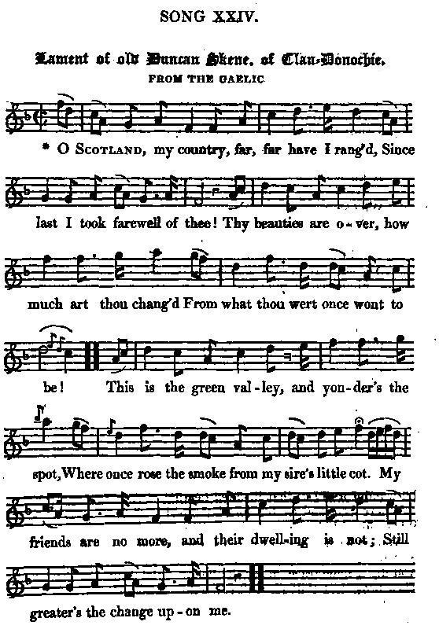

Lament of old Duncan Skene of Clan-Donochie
Complainte du vieux Duncan Skene de Clan-Donochie
Tune - Mélodie"Lament of old Duncan Skene of Clan-Donochie"
from Hogg's "Jacobite Relics" 2nd Series Appendix "Jacobite Songs" N°24
Sequenced by Christian Souchon

|
To the tune:
Hogg gives no particulars as to the origin of this beautiful tune. |
A propos de la mélodie:
Hogg n'indique pas la provenance de cette belle mélodie. |

|
LAMENT OF OLD DUNCAN SKENE OF CLAN-DONOCHIE
From the Gaelic 1. O Scotland, my country, far, far have I rang'd, Since last I took farewell of thee! Thy beauties are over, how much art thou chang'd From what thou wert once wont to be! This is the green valley and yonder's the spot, Where once rose the smoke from my sire's little cot. My friends are no more, and their dwelling is not; Still greater's the change upon me. 2. I was young, and my hopes and my courage were high. For freedom I freely drew glaive ; But ruin soon came, and the spoiler was nigh; No home there remained for the brave. I have roamed on the world's wide wilderness cast, Unfriended, exposed to the bitterest blast Of misfortune, and now I have sought thee at last, To sleep in my forefathers' grave. 3. As clear as before runs thy burn o'er its bed, As sweet thy wild heath-flowerets grow ; But thy glory is past, and thy honours are fled, Since freedom no more thou canst know: Thy sons were disloyal, unmanly, unjust; The heroes were few that stood firm to their trust; Thy thistle's dishonoured and trampled in dust, By the friends of thy deadliest foe. 4. The smoke of the cottage arose to the sky, The babe dipt its finger in gore, And smiled, for it knew not the bright crimson dye, Was the life's blood of her that it bore. Thy foes they were many, and ruthless their wrath, Thy glens they defaced with ravage and death; Thy children were hunted and slain on the heath, And the best of thy sons are no more. 5. Thy hills are majestic, thy valleys are fair, But ah, they're possessed by a foe; Thy glens are the same, but a stranger is there; There is none that will weep for thy woe. On my thoughts hangs a heavy, a dark cheerless gloom, And far from thee long have I mourned o'er thy doom; And again I have sought thee to find me a tomb; 'Tis all thou hast now to bestow. 6. I'll wander away to that ill-fated heath, (*) Where Scotland for freedom last stood ; Where fought the last remnant for glory or death, And sealed the true cause with their blood. And there will I mourn for the honour that's fled, And dig a new grave 'mong the bones of the dead; Then proudly lay down my gray weary head, With the last of the loyal and good. T. G. (*) Culloden Source: "The Jacobite Relics of Scotland, being the Songs, Airs and Legends of the Adherents to the House of Stuart" collected by James Hogg, published in Edinburgh by William Blackwood in 1821. |
LES LAMENTATIONS DE DUNCAN SKENE DU CLAN-DONOCHIE
Traduit du gaélique 1. Chère Ecosse, c'est la fin! J'en ai fait du chemin Depuis le dernier jour où je t'ai vue! Tes beautés sont fanées; tu n'es plus, je le sais, Cette Ecosse qu'autrefois j'ai connue! Voici donc ma vallée: et là-bas la fumée Indiquait notre maison, sortant de la cheminée. Ont disparu mes anciens amis. Et leurs maisons aussi. Et que dire de ma tête chenue! 2. J'étais jeune et plein d'espoir. Conscient de mon devoir, Pour la liberté j'ai tiré le glaive. Puis vint le malheur noir, et le temps des pillards: Les braves n'avaient plus d'abri, ni trêve. Jeté sur les chemins, je naviguais au loin, Privé d'amis, de parents, dans la tempête et le vent, Sur moi le destin s'acharne en vain, je te reviens enfin. Reposer près des miens: mon dernier rêve! 3. Le ru, clair comme jadis, s'écoule dans son lit, Aussi belles sont les fleurs des bruyères. Mais ta gloire est ternie et ton honneur flétri, Toi qui perdis ta liberté si chère. Tes fils sont oublieux, déloyaux et peureux; Rares sont les vrais héros qui vont encor le front haut. Ton Chardon aux pieds ils l'ont foulé, dans la boue piétiné, Les amis de tes pires adversaires! 4. La fumée de l'incendie dont le ciel s'obscurcit, L'enfant qui touche la flaque sanglante, Souriant, inconscient de jouer avec le sang De celle, hélas, qui fut sa mère aimante. Tes ennemis étaient nombreux et décidés. Ils ont dévasté tes glens, pleins de fureur et de haine, Tes enfants ont été pourchassés, sur la lande égorgés, Les meilleurs de tes fils, perte affligeante. 5. Si tes monts sont imposants, si tes vals sont charmants, Un ennemi n'en est pas moins le maître; Aux mains de l'étranger, tes glens n'ont point changé, Et ton chagrin nul ne veut le connaître. J'ai l'esprit envahi de chagrins, de soucis. Et loin de toi j'ai pleuré sur ta triste destinée Puis je suis rentré dans mon pays pour être enseveli Oui, c'est là tout ce qu'il faut me promettre. 6. Je veux visiter encor ce lugubre décor (*) Où l'Ecosse de ses droits fut forclose; Dans un ultime effort pour la gloire ou la mort, Fut scellée dans le sang la juste Cause. Je porterai le deuil de l'honneur, de l'orgueil Creuserai tombeau nouveau parmi les corps et les os Ma tête grise j'y poserai pour dormir à jamais Où les loyaux et les braves reposent. (Remerciements au contributeur) (*) Culloden (Trad. Christian Souchon (c) 2010) |